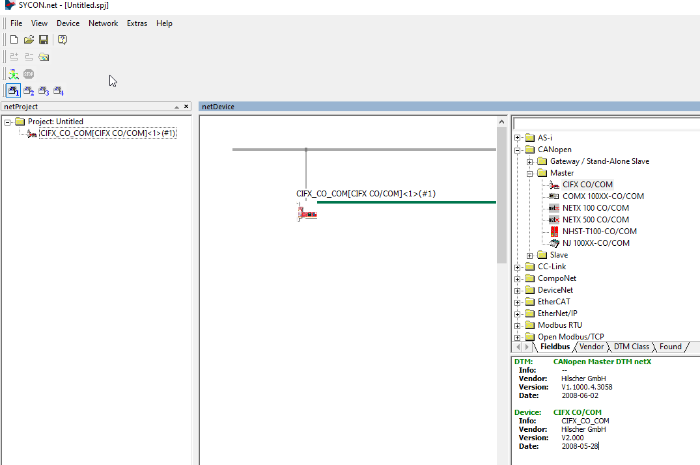
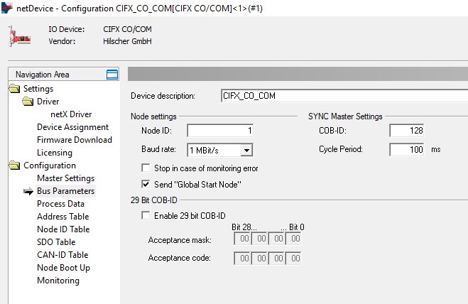
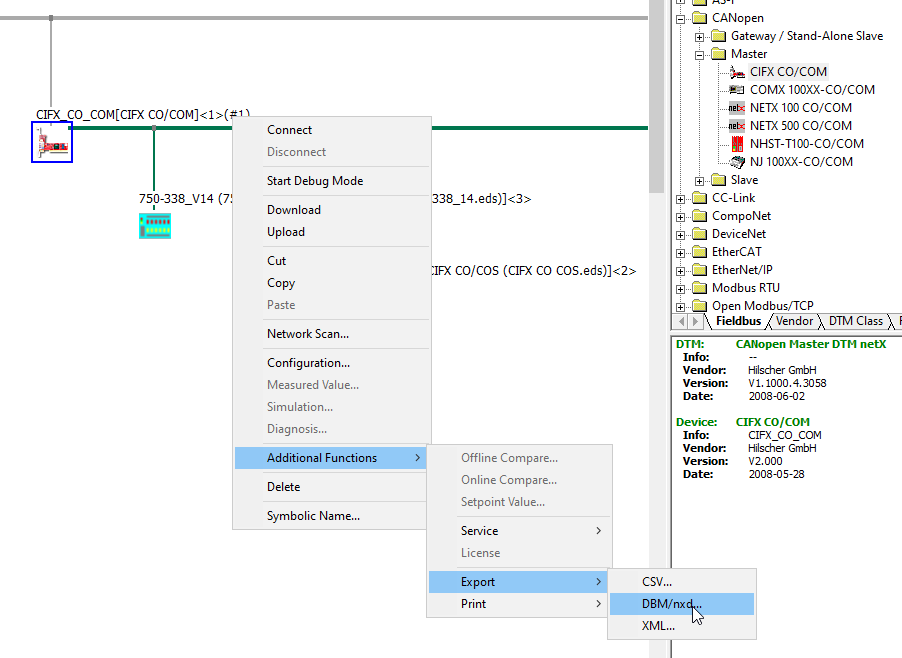
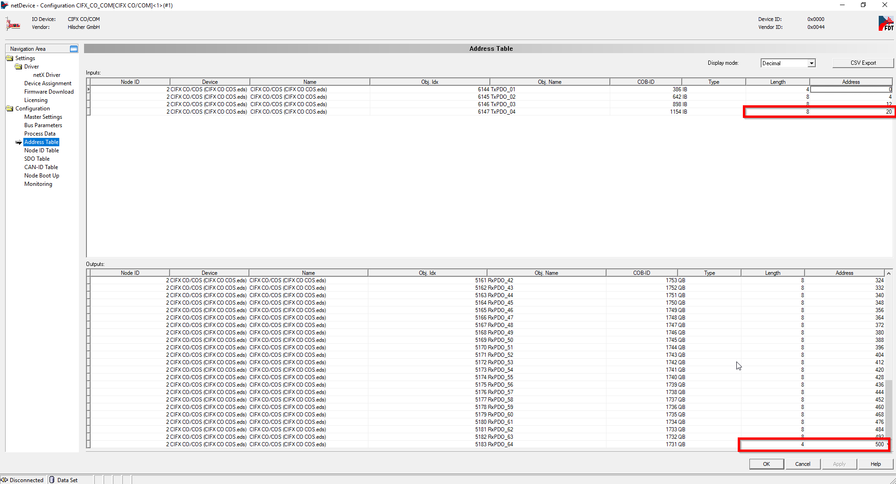
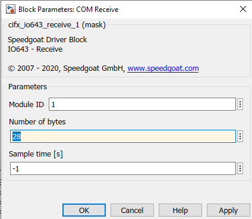
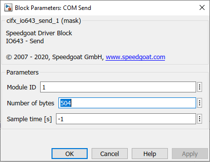
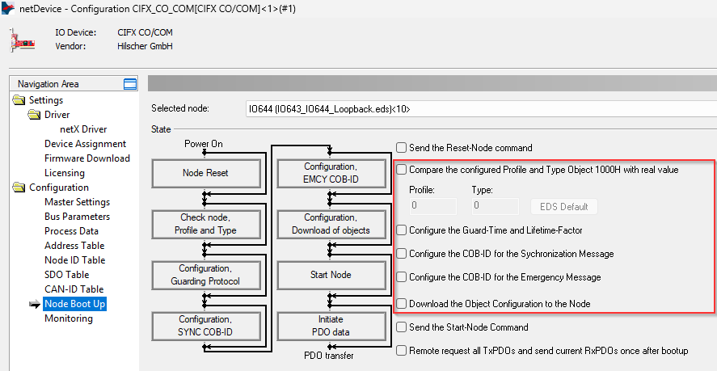

IO643 Usage Notes
IO643 Usage Notes — Usage information about the I/O module
I/O Module configuration with SYCON.net
During initialization of the real-time application, the IO643 Setup block reads a configuration file from the hard drive of the target machine and configures the CANopen Master protocol stack. Use the SYCON.net configuration tool to create such a file.
![[Tip]](images/tip.png) | Tip |
|---|---|
Download the SYCON.net configuration tool from the Speedgoat Customer Portal. Login to your Speedgoat account. In the Downloads section, navigate to Software and click SYCON.net (v1.500 Build 231214). |
In addition to this short introduction, please read the SYCON.net help documentation for detailed information about how to set up a CANopen network and export the module configuration file.
Open SYCON.net and create a new project
In the right window, select the Fieldbus tab, navigate to CANopen > Master, select the CIFX CO/COM item and drag it to the bus line in the Network View window

Double-click the master node in the Network View window, navigate to Bus Parameters and set the desired Node ID and Baud rate

In the main menu bar, navigate to Network and click Import Device Descriptions. Select the device description files (*.eds) of the slaves included in your CANopen network
In the right window, select the Fieldbus tab, navigate to CANopen > Slave, select the slave device and drag it to the master bus line in the Network View window
Double-click the slave nodes in the Network View window and configure the PDO mapping according to the corresponding device description file of the slave
Double-click the master node in the Network View window, navigate to Node ID Table and set the appropriate Node ID for each slave
Save the project
Right-click the master node in the Network View window, navigate to Additional Functions > Export and click DBM/nxd. Save the file to a destination of your choice

Configuration of the Send and Receive Blocks
To access the data sent and received by the I/O module, add one Send and one Receive block to your Simulink model. The Number of Bytes block parameters result from the PDO configuration in the SYCON.net project.
In the SYCON.net project, double-click the master node and navigate to the Address Table. There you can find the length and the offset of each PDO in the RX and TX data areas of the I/O module

The upper table is labeled Inputs and contains the TX PDOs of the slaves. This is the data the master receives from the slaves. Add the Length of the last row to the Address of the last row and enter the result into the Number of Bytes parameter of the Receive block in Simulink

The lower table is labeled Outputs and contains the RX PDOs of the slaves. This is the data the master sends to the slaves. Add the Length of the last row to the Address of the last row and enter the result into the Number of Bytes parameter of the Send block in Simulink

| Tip |
|---|---|
You can autogenerate the entire data assembly and extraction part for your model including Send, Receive, Packing and Unpacking blocks with the help of the createFromSycon function. |
PDO communication with non-conformant CANopen slave devices
By default, the IO643 sends an SDO request to all configured slaves to read object 0x1000, which contains device type information. The module reads this object not only to check the device type but also to check if SDO communication is supported. Slave devices that do not support SDO or do not have an object dictionary will not respond to this read request. In such cases, the IO643 will not start sending PDOs to the slaves or process received PDOs.
To prevent the IO643 from sending this specific SDO read request, all SDO-relevant configuration options must be disabled in the SYCON.net project. This informs the module that no SDO communication is required during runtime and that reading object 0x1000 is not required. The module will then just start sending the configured PDOs.
In the SYCON.net project, double-click the master node and navigate to the Node Boot Up. Clear the checkboxes as shown in the following screenshot:



LED Status Description
LED Color State Meaning SYS Green On Operating system running Green/Yellow Blinking Second stage bootloader is waiting for firmware Yellow On Bootloader netX (= romloader) is waiting for second stage bootloader Off Off Power supply for the device is missing or hardware defect CAN Green On The device is in the OPERATIONAL state Green Blinking (2.5 Hz) The device is in the PREOPERATIONAL state Green Single flash The device is in STOPPED state Red Single flash Warning limit reached: At least one of the error counters of the CAN controller has reached or exceeded the warning level (too many error frames) Red Double flash Error control event: A guard event (NMT slave or NMT master) or a heartbeat event (heartbeat consumer) has occurred Red On Bus Off: The CAN controller is in bus OFF state Off Off The device is executing a reset or the device has no configuration
LED Color State Meaning STATUS/COM1 Green On The device is in the OPERATIONAL state Green Blinking (2.5 Hz) The device is in the PREOPERATIONAL state Green Single flash The device is in STOPPED state Off Off The device is executing a reset or the device has no configuration. Refer to the ERROR LED ERROR/COM2 Off Off Refer to the STATUS LED Red Single flash Warning limit reached: At least one of the error counters of the CAN controller has reached or exceeded the warning level (too many error frames) Red Double flash Error control event: A guard event (NMT slave or NMT master) or a heartbeat event (heartbeat consumer) has occurred Red On The CAN controller is in bus OFF state
Status Codes
For the list of status codes, please refer to Status Codes for Protocols Supported with the IO64x/IO75x Modules.